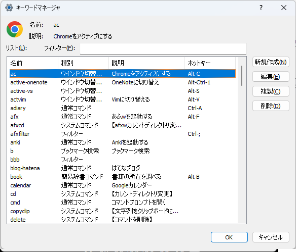

キーワードマネージャ
概要
本アプリに登録したコマンドの管理(追加/編集/削除)をするための画面。
下記のいずれかの操作を行うと、キーワードマネージャーを表示することができる。
入力画面で
editコマンドを実行する入力画面で空欄のままEnterキーを押下する
タスクトレイのアイコンを右クリックし、
キーワードマネージャを選択する
画面の説明

リスト
登録済のコマンド一覧が表示されるフィルター
入力した文字列でリストの表示項目を絞り込める
空白区切りで複数ワードを指定できる(AND検索)新規作成
コマンドを新規登録する。コマンドの種別を選択する画面を表示する編集
リスト上で選択したコマンドを設定を変更する。編集画面が表示される。複製
リスト上で選択したコマンドを複製する
(選択中のコマンドの設定内容をもとに、別のコマンドを作ることができる)削除
リスト上で選択したコマンドを削除する
コマンド種類選択
作成するコマンドの種類を選択するための画面。
コマンドの種類を選択して、OKボタンを押下すると、選択したコマンドの新規作成画面を表示する。
各コマンドの説明については 登録型のコマンド を参照のこと